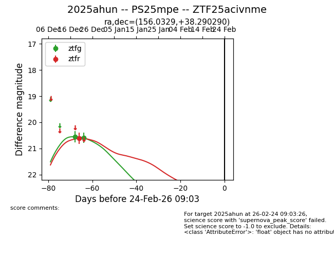
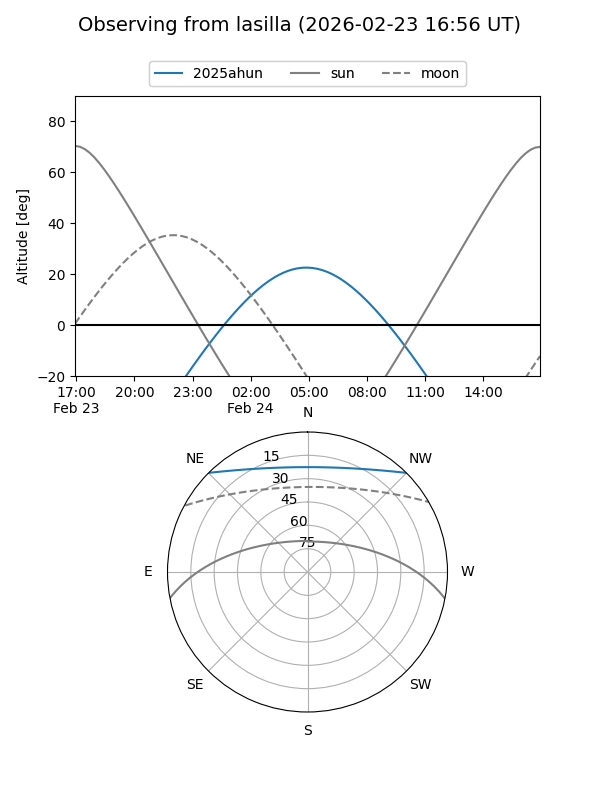
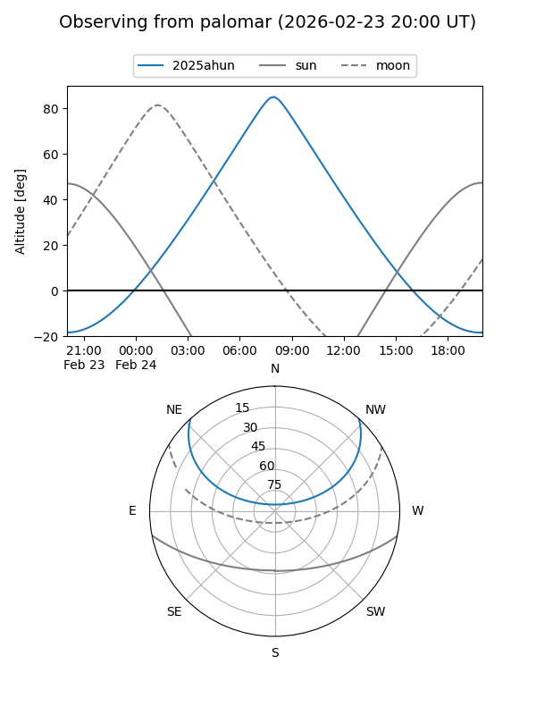
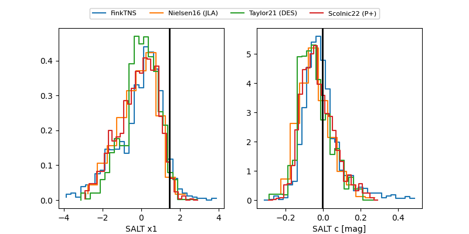

2025ahun
Target 2025ahun at 2026-01-28 12:41
Aliases and brokers:
FINK: link
Lasair: link
ALeRCE: link
TNS: link
YSE: link
alt names
ZTF25acivnme (ztf,fink_ztf)
2025ahun (tns,yse)
PS25mpe (panstarrs)
Coordinates:
equatorial (ra, dec) = 156.0329,+38.29029
equatorial (HMS+DMS) = 10:24:07.89,+38:17:25.04
galactic (l, b) = (183.5399,+57.31934)
Flags:
Photometry:
last ztfg=20.59, ztfr=20.61
2 ztfg, 1 ztfr detections
Lightcurve

Visibility


Additional plots
